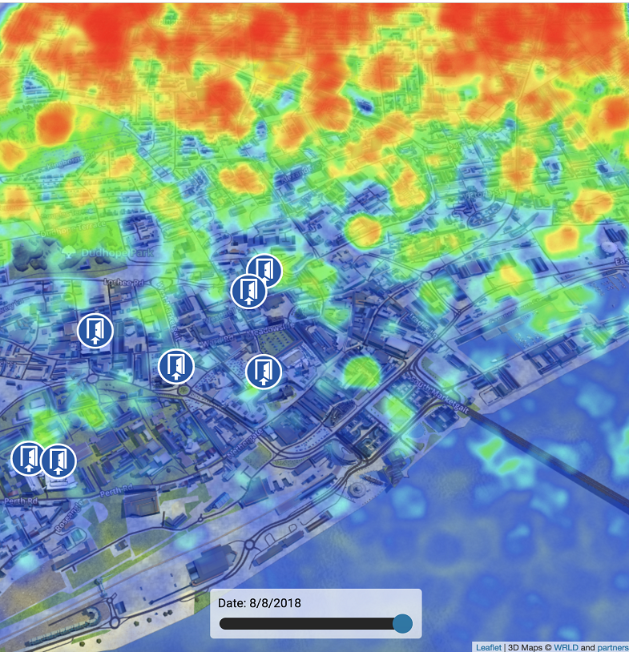
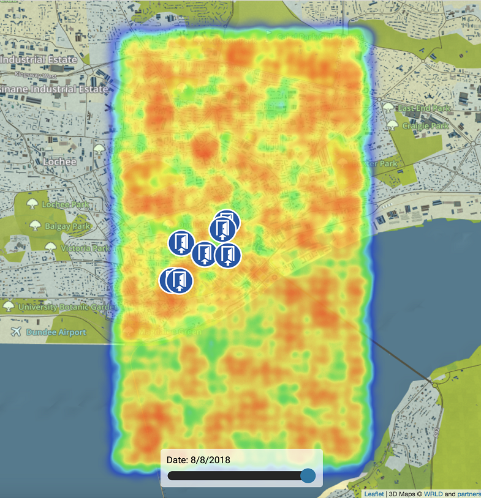

Wrld.time.js
Time visualisation library
What can you do?
Time visualisation library
The aim of this piece of software is to allow you to import any data you wish which contains longitude latitude and time values, for it to then be represented as heatpoints for the data creating a heatmap. For further look into how to achieve this check the out the documentation dropdown box at the top of the screen.Below you will find a live example of the software in action displaying a heatmap of generated data for the interior of the Westport building
Live Example
Below you will find a live example that you can try using.